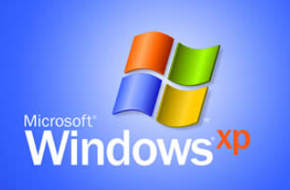

Operating Systems
Examples of Operating Systems
Windows
Widely used in PCs and businesses, with an easy interface and many programs.
iOS
From Apple, used in iPhones and iPads, stands out for security, integration and good performance.
Linux
Free and open source, preferred by programmers and servers for security and flexibility.
Android
Google's system for phones and tablets, famous for customization and variety of apps.
Examples of Operating Systems
Windows
Widely used in PCs and businesses, with an easy interface and many programs.
iOS
From Apple, used in iPhones and iPads, stands out for security, integration and good performance.
Linux
Free and open source, preferred by programmers and servers for security and flexibility.
Android
Google's system for phones and tablets, famous for customization and variety of apps.
Windows XP
Windows XP is one of the most iconic operating systems in Microsoft's history, officially released on October 25, 2001. It combined the stability of Windows 2000 with the ease of use of Windows ME, creating a reliable and accessible platform for millions of users worldwide. With its friendly interface, solid performance and wide software compatibility, Windows XP became an icon of the golden age of personal computers.
Main Features of Windows XP
Security and Stability
Based on the Windows NT kernel, it offered much more security and reliability compared to previous versions.
Hardware Support
Compatible with a huge variety of devices and hardware peripherals and drivers.
Network and Internet Wizard
Facilitated the configuration of home and corporate networks and connections, making the process more intuitive.
Compatibility Mode
Allowed older applications to run without problems on the new system.
Updated Visual Interface
Introduced the Luna theme, with vibrant colors and more modern icons, making the visual experience more pleasant.
Curiosities about Windows XP
Codename "Whistler"
Windows XP was developed under the codename "Whistler", a reference to the Whistler Blackcomb ski resort in Canada.
Impressive Longevity
Windows XP had one of the longest life cycles of Microsoft, with extended support until April 2014 - almost 13 years after its release.
Bliss Wallpaper
The famous "Bliss" background image was a real photograph taken in the Sonoma wine region, California, in 1996.
Special Editions
In addition to the Home and Professional versions, Microsoft released specific editions for tablets (Tablet PC Edition) and for embedded devices.
File System Innovations
Windows XP was the first version of Windows to include native support for CD burning, without the need for additional software.
Windows 8
Windows 8 is a version of the Windows operating system released by Microsoft on October 26, 2012, with a focus on interfaces optimized for touch and mobile devices; official support for Windows 8 was later discontinued, and the next version was Windows 8.1. This version was criticized by users accustomed to the classic Windows model and was quickly adjusted by the company in updates and in version 8.1. Windows 8 marked Microsoft's transition to a unified vision between desktop and mobile devices, influencing the development of interfaces and hybrid devices.
Features
What made Windows 8 so different
Curiosities
Curious facts and bold decisions that marked Windows 8